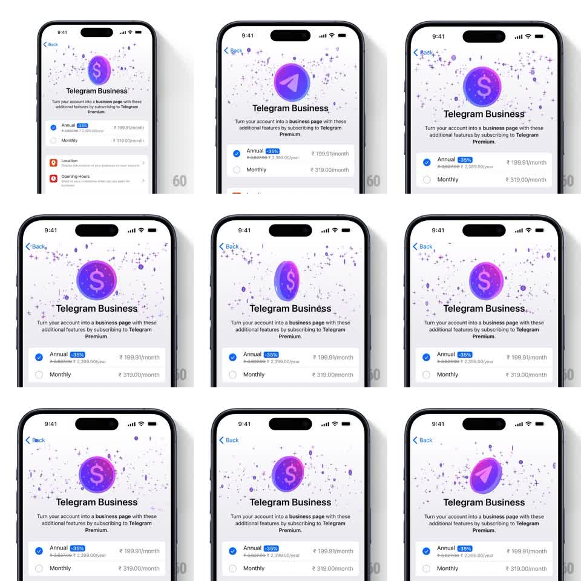

Media
Frame-by-frame

Rebuild this interaction 1:1: Telegram Business paywall badge - a purple coin at the top of the subscription page continuously flips 180 degrees around its vertical axis, alternating between the Telegram plane logo and a dollar-sign business face, surrounded by twinkling sparkle particles.

Rebuild this interaction 1:1: Telegram Business paywall badge - a purple coin at the top of the subscription page continuously flips 180 degrees around its vertical axis, alternating between the Telegram plane logo and a dollar-sign business face, surrounded by twinkling sparkle particles. ## Integration Integration: stack-agnostic spec - springs given as stiffness/damping, timed motions as duration + curve; map every value to your framework and animation library of choice. ## Scene Telegram Business upsell page: purple circular badge centered in a field of small sparkle/cross particles, "Telegram Business" title, explainer copy, plan options (Annual -35% / Monthly) with radio selection, and feature rows (Location, Opening Hours). ## Motion spec Pattern: continuous 3D coin flip. - The badge rotates around its Y axis: 0 -> 180 -> 360deg, ~2.5s per full revolution, ease-in-out with a slight dwell on each face. - Faces: front = Telegram plane glyph, back = "$" glyph; both embossed on the same purple gradient coin. - At 90/270deg the coin reads as a thin sliver - true 3D perspective (scaleX compression is acceptable, keep it perspective-correct). - Sparkle particles twinkle independently around the coin (opacity/scale pulses, 1-2s random phases). ## Calibration - The flip should feel weighty - slow in the middle of each face, fastest through the edge-on moment. - Sparkles never overlap the coin's silhouette enough to obscure the glyph. ## Reduced motion Badge crossfades between faces (400ms) every 2s, no rotation; static sparkles. ## Don't miss - Both faces share one coin geometry - no two-element crossfade in the normal path. - The flip loops forever; there is no "resting" face.